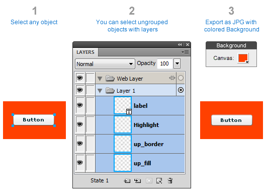
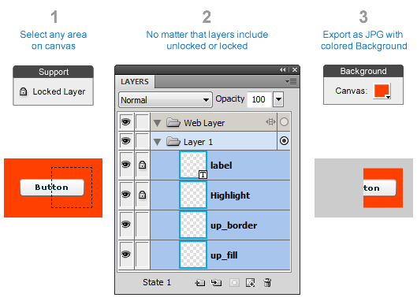
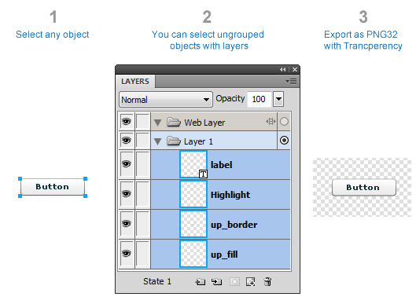
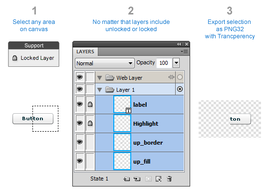

Slice Export
Slice like Photoshop in Fireworks.
Many web designers and front end engineers are trying to switch from Photoshop to Fireworks. These commands will help front end engineers to export graphics to HTML markup in a familiar for Photoshop manner.
Export JPG from Object
Helps export selected layers to JPG, you can choose JPG compression in popup dialog after running command. Background color in exported jpeg will used from actual canvas color.

Export JPG from Selection
Helps export graphics from actual selection by using Marquee Tool to JPG, you can choose JPG compression in popup dialog after running command. Background color in exported jpeg will used from actual canvas color.

Export PNG 32 from Object
Helps export selected layers to PNG. Command export PNG with transperent Background.

Export PNG 32 from Selection
Helps export graphics from actual selection by using Marquee Tool to PNG with transperent Background.
